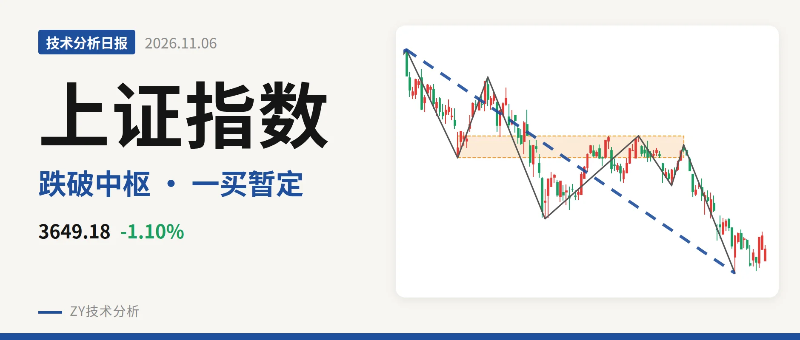
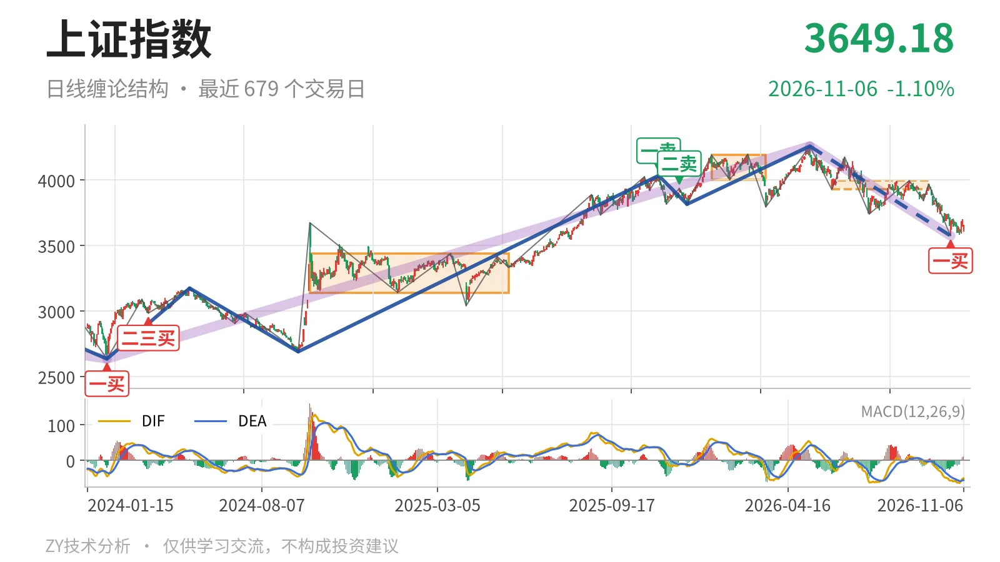
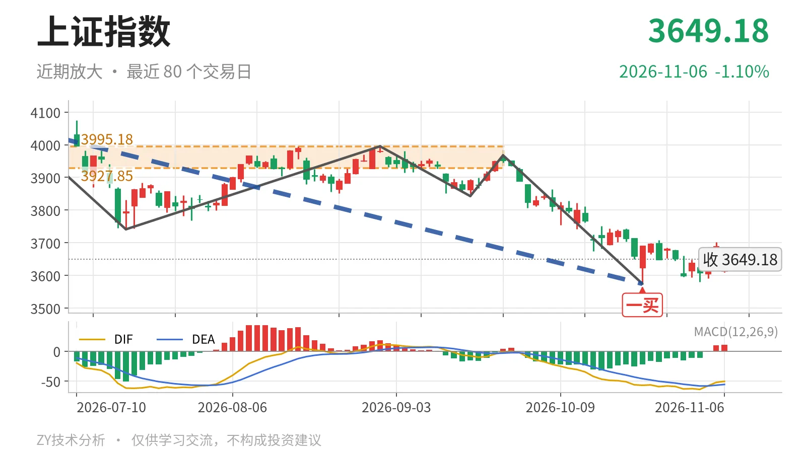

上证指数｜跌破3928中枢下沿，一买暂定

最近日线中枢 3927.85—3995.18点，收盘位于中枢之下
一句话：日线下跌线段未结束，反弹未成笔，短期结构偏弱
📉 走势结构：日线下跌线段仍在延续
当前上证指数仍处在5月14日至10月23日的日线下跌线段中，这段没有结束。该线段自4258.86点展开，最低下探3574.27点，下跌约16.1%，日线结构由7笔构成；其起点前，2025年12月16日至2026年5月14日的日线上涨线段已在4258.86点结束。更大级别上，2024年2月5日至2026年5月14日的上涨走势未结束，当前回落仍属于该上涨走势的内部向下段，而非独立空头结构。10月23日之后价格没有再创日线笔新低，但反弹也未改变下跌线段结构。

🧭 中枢与位置：跌破中枢下沿，重心下移
最新收盘3649.18点，位于6月8日至9月22日日线笔中枢下沿3927.85点下方，低于下沿约7.1%。该中枢区间为3927.85—3995.18点，中轴3961.51点，目前尚未完成；此前1月14日至3月23日中枢下沿为4002.78点，之后下移至3927.85点，中枢下移。价格既未回到最近中枢内部，也未回到4002.78点上方，说明近半年日线震荡重心已向下移动。从更大级别看，前期的2021年7月28日至2023年5月9日线段中枢3312.72—3418.95点仍在下方，当前价尚未回到该区域。
🎯 买卖点：暂定一买出现，反弹未成笔
10月23日出现日线笔级别一买3574.27点，对应9月22日至10月23日下跌笔的结束。但10月26日以来的走势最高3708.20点、最低3580.38点，尚未形成新的日线上涨笔，因此这个一买目前是暂定的一买，会随这段反弹的延续而变化。反弹高点3708.20点仍低于中枢下沿3928点附近，没有扭转中枢下移。上方2025年11月14日一卖4034.08点、2025年12月8日二卖3936.31点，卖点一个比一个低，构成这段日线回落的高位起点。

📊 背驰：新低未见标准背驰
比较9月22日至10月23日与6月23日至7月20日两段同向下跌笔。前者价格创出3741.11点新低至3574.27点，DIF低点-57.1高于前一笔的-61.8，但绿柱面积347大于前一笔的289。这不算标准的新低不新弱，只是DIF钝化、绿柱面积未收缩。当前MACD柱为10.4，DIF仍在零轴下方，说明修复仍属小级别，日线下跌线段没有结束。也就是说，3574.27点的一买目前只对应小级别结构，日线笔背驰尚未完成。
🧩 关键位置观察：反抽不回，结构承压
上方压力看3928点附近，即最近中枢下沿3927.85点的整数位。若反抽不能回到3928点上方，结构上构成三卖，日线回落仍有延续压力；若重新站上3928点，则这段下跌更可能只是中枢扩展，而非向下离开中枢的趋势下跌。下方3574点一买若再被跌破，则日线下跌线段继续。当前价格在最近中枢下方、反弹未成笔，短期结构仍偏弱：弱在反弹未触及中枢下沿，且日线下跌线段未结束。
⚠️ 本文为基于公开行情数据的缠论技术结构记录，由程序自动计算并生成，仅供学习交流，不构成任何投资建议。市场有风险，投资需谨慎。